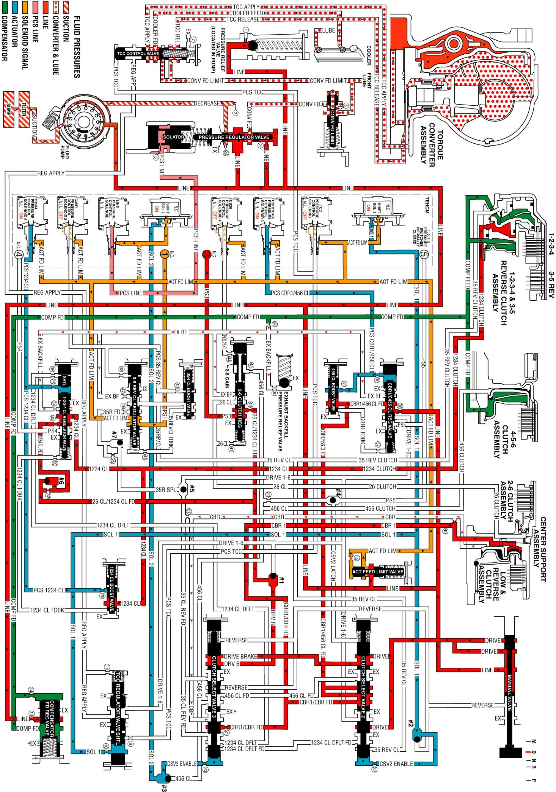

Drive Range, First Gear Engine Braking
Drive Range, First Gear Engine Braking
When the gear selector lever is moved to the Drive (D) range from the Neutral (N) position, the transmission will provide engine braking. In this operating range, the normally-low C1234 pressure control solenoid 5 is commanded ON and in the engine braking mode the following changes occur within the hydraulic circuits:
Fluid Pressure is Directed to the 1-2-3-4 Clutch and the Low & Reverse Clutch to Provide Engine Braking
Manual Valve
The manual valve is moved to the Drive (D) position and allows line fluid pressure to enter the drive fluid circuit. Drive fluid is then routed to the clutch select valve 2.
Clutch Select Valve 2
Drive fluid at the clutch select valve 2 passes through the valve and enters the drive brake circuit. Drive brake fluid is then routed to the clutch select valve 3.
Clutch Select Valve 3
Drive brake fluid at the clutch select valve 3 passes through the valve and enters the Drive B fluid circuit. Drive B fluid is then routed to #1 ball check valve.
#1 Ball Check Valve
Drive B fluid seats the #1 ball check valve against drive 1-6 fluid to force drive B fluid into the CB26/C1234 feed passage. CB26/C1234 feed fluid is routed to the #6 ball check valve, through orifice #43 and, to the 2-6 clutch regulator valve. CB26/C1234 feed fluid passes through the 2-6 clutch regulator valve and enters the pressure switch 3 (PS3) fluid circuit. PS3 fluid is then routed to the normally closed pressure switch 3 and opens the switch.
#6 Ball Check Valve
CB26/C1234 feed fluid seats the #6 ball check valve against the 1234 clutch feed passage forcing CB26/C1234 feed fluid through orifice #32 before entering the 1234 clutch feed circuit. The 1234 clutch feed fluid is routed through orifice #33 and then to the 1-2-3-4 clutch regulator valve.
1-2-3-4 Clutch Applies
C1234 Pressure Control Solenoid 5
The C1234 pressure control solenoid 5 is commanded ON allowing actuator feed limit fluid to enter the PCS1234 clutch fluid circuit. PCS1234 clutch fluid is then routed through orifice #35 to the 1-2-3-4 clutch regulator valve. PCS1234 clutch fluid is also routed through orifice #29 and then to the 1-2-3-4 clutch boost valve.
1-2-3-4 Clutch Regulator Valve
PCS1234 clutch fluid moves the 1-2-3-4 clutch regulator valve against 1-2-3-4 clutch regulator valve spring force to allow 1234 clutch feed fluid to pass through the valve and enter the 1234 clutch fluid circuit. The 1234 clutch fluid is then routed to the 1234 clutch boost valve and the 1-2-3-4 clutch.
1-2-3-4 Clutch Boost Valve
PCS1234 clutch fluid pressure acts on a differential area moving the 1234 clutch boost valve against the 1234 clutch boost valve spring. The 1234 clutch fluid passes through the valve and enters the 1234 clutch feedback circuit. As PCS 1234 clutch fluid pressure is increased to a given value, the 1234 clutch boost valve opens the 1234 clutch feedback circuit to exhaust. This results in the 1234 clutch regulator valve moving to the full feed position sending full 26 CL/1234 CL feed pressure (full line pressure) to the clutch.
1-2-3-4 Clutch
The 1234 clutch fluid enters the 1234 clutch housing to move the piston against spring force and compensator feed fluid to apply the 1-2-3-4 clutch plates.
Drive Range, First Gear Engine Braking
Drive Range, First Gear Engine Braking:
